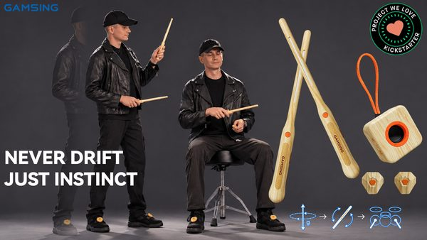
W1: The World's First Gravity-Vector AirDrum
No Drift. Just Instinct. Powered by gravity-vector-referenced positioning. Instant play, drums follow you, and no repeated calibration. W1 is a gravity-vector AirDrum built for instant, drift-free play. Its virtual drum kit stays aligned as movement changes, eliminating repeated calibration. With 128 velocity levels, 10 drum sounds, foot control, and backpack portability, it delivers a full drummi
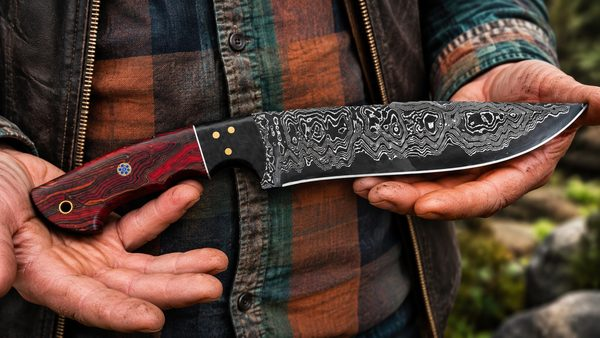
Handforged San-Mai Damascus Knife for the Outdoors
150 layer visual depth with a San Mai–inspired structure 35cm full length 21cm blade 5mm spine Micarta Handle Forgec 15N20 &1070 Steel Cheap outdoor knives chip, slip, or feel unreliable when camp tasks get serious. This hand-forged field knife answers with full-tang construction, a 5 mm spine, 59 HRC heat treatment, and a Micarta handle, giving outdoor use the strength, grip, and confidence every
The Ascent Performance Blazer & Suit
Traditional tailoring meets next-level performance. The Ascent blends super-soft flannel, cold-weather comfort and a perfect fit. Cold-weather suiting usually means stiff fabric, constant steaming, and discomfort indoors. This tailored upgrade solves all three with ultra-soft performance flannel, breathable warmth, 4-way stretch, wrinkle and stain resistance, plus machine washability. Sharp enough
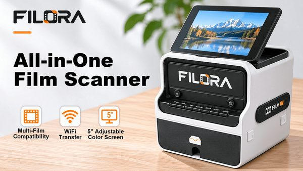
FILORA: Bring Your Film Memories Back to Life
Fast HD Scanning | Multi-format Film Compatibility | 5-inch Adjustable Color Display | WiFi Wireless Transfer | Color & Exposure Adjustment | 4 Resolution Modes
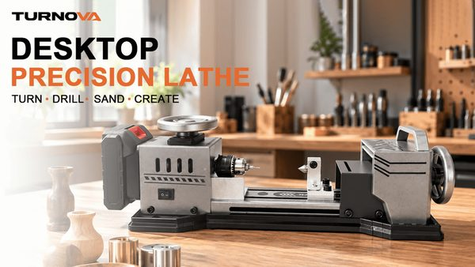
TURNOVA: Precision Wood Lathe for DIY Makers & Creators
Wood Turning | DIY Woodworking | Creative Crafting | Smooth Operation | Versatile Projects | Bring Your Woodworking Ideas to Life
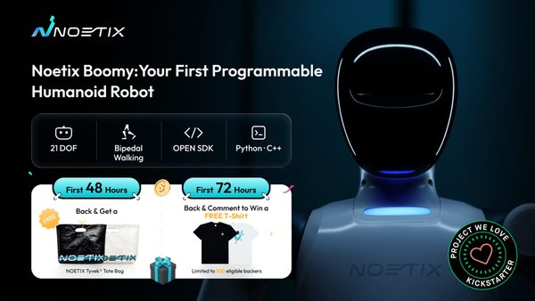
Noetix Boomy: Your First Programmable Humanoid Robot
From Code to Motion in Minutes | Open SDK | 21 DOF | Bipedal Walking | Graphical Coding | Python / C++ | Teach by Hand Noetix Boomy is a programmable humanoid robot with 21 degrees of freedom, bipedal walking, and open SDK support. Build behaviors with graphical coding, Python, or C++, then teach movements by hand and watch code turn into motion within minutes.
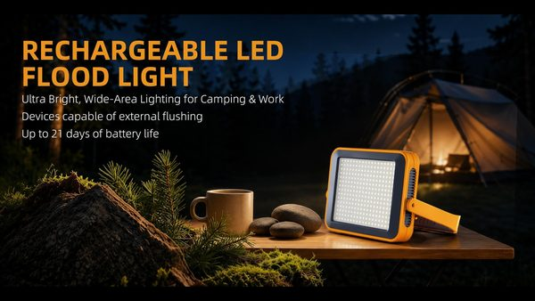
CAMPRAY: The All-in-One Light for Camping & Work
30,000mAh | 5 Color Temperatures | 360° Swivel | Magnet, Hook & Tripod Mounts | Phone Charging | Mosquito Repellent Pad | Remote CAMPRAY is a rechargeable LED flood light built for camping and work, with 30,000mAh power, five color temperatures, 360-degree swivel positioning, remote control, phone charging, and magnet, hook, and tripod mounting options for flexible, cordless lighting wherever task
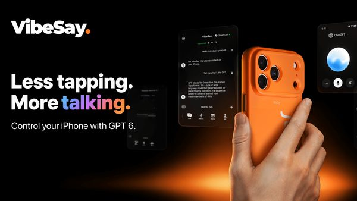
AI Suit: The iPhone Case with AI Control. Just say the word
GPT-6 Powered | 3mm Thin | Voice Control Your iPhone |Record with Bluetooth Earphones |Dual Knowles Mics | AI Transcription & Summaries AI Suit is a 3mm-thin iPhone case with voice control, dual Knowles mics, and three shortcut buttons. Start recordings, capture voice memos, chat with AI, and trigger supported iPhone functions instantly. Bluetooth earphone support enables private call recording wi
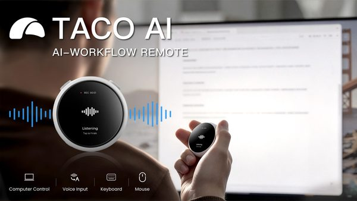
TACO AI - The Natively Built AI Voice Typing Remote
Speak naturally. TACO turns your words into clear, polished writing in the apps you use & keeps the next action within reach. TACO AI is a handheld voice typing remote that turns natural speech into polished text and commands across apps and devices. One-handed controls handle clicking, scrolling, switching apps, and shortcuts, while the AI agent drafts, finds information, and completes next actio
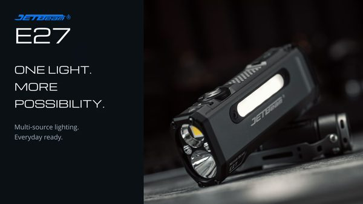
JETBeam E27: One Light. More Possibility
Spot&Flood White light, Red, UV, RGB ambient side lights | Type C charging& Powerbank | 5100mAh battery | Dial&Side&Tail control system
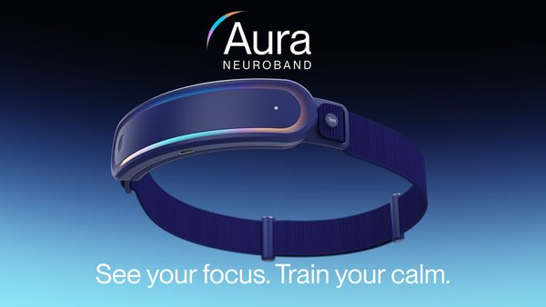
Aura NeuroBand: The EEG Headband for Focus and Calm
Dry sensors read your brain activity and the app shows when you're focused or calm, using light and touch instead of another screen.
Flic Cue: The AI Voice Button that keeps your phone away
Push-to-talk, reinvented for AI. What you say lands in your list, calendar, inbox or AI agent. Wear it or mount it. No need to charge. Flic Cue is an AI voice button that captures tasks, messages, reminders, and calendar items with a press and a phrase. Wear it or mount it anywhere, send voice over Bluetooth, and keep phones tucked away while thoughts land exactly where they belong.
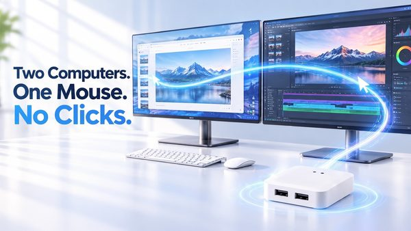
Whaleaop Link: Quickly Switch Computers Without a Click
One Keyboard & Mouse for Two Computers | Cursor-Edge Switching | Compact & <1ms Switching | Cross-Platform | No Software Whaleaop Link lets one keyboard and mouse control two computers with cursor-edge switching, under-1ms response, and 1000Hz polling. No software, no shared network, and no button presses required. Compact hardware works across Windows, Mac, Linux, and more while keeping each scre
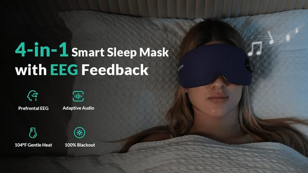
Medcursor: 4-in-1 Sleep Mask with EEG Feedback
Prefrontal EEG · Adaptive Audio · 104°F Gentle Heat · 100% Blackout · All Sleep Positions— All in One Smart Sleep Mask Medcursor is a 4-in-1 smart sleep mask that combines prefrontal EEG sensing, adaptive audio, 104°F gentle heat, and complete blackout. It tracks brain activity in real time, adjusts sound as sleep approaches, and stays comfortable across back, side, and stomach sleeping positions.
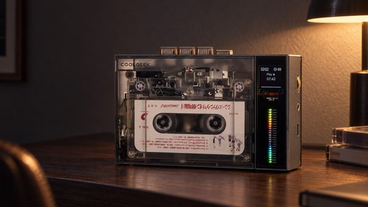
COOLGEEK P1 — The Cassette Player, Reimagined
Transparent mechanics, CNC aluminum, tactile controls, and screen-guided Bluetooth—bringing cassette listening into the modern home. COOLGEEK P1 is a modern cassette player with transparent mechanics, CNC aluminum construction, tactile brass controls, and a screen for playback details and Bluetooth pairing. See tapes move, check what is playing, and connect devices without blind guessing—all in on
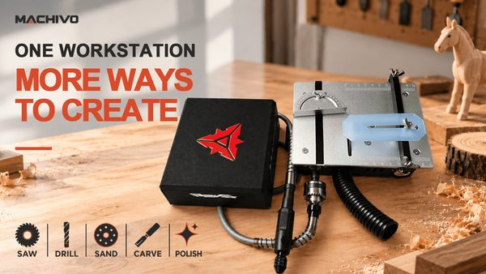
MACHIVO: All-in-One Mini Precision Workbench for Makers
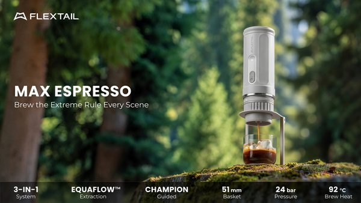
MAX ESPRESSO: Champion-Guided 3-in-1 Portable Coffee Machine
Champion-Guided |51mm Commercial Basket |Capsules & Fresh Grounds | 24-Bar Pump | Stable 92°C | Self-Heating | Full Accessory Kit MAX ESPRESSO is a 3-in-1 portable coffee machine for fresh grounds, Nespresso Original, and Dolce Gusto capsules. A 24-bar pump, stable 92°C brewing, self-heating system, and 51mm commercial basket deliver balanced espresso without an outlet, counter, or complicated set
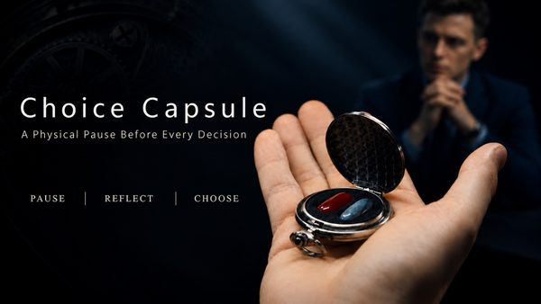
Choice Capsule: A Physical Pause Before Every Decision
Two natural gemstone capsules, housed in a pocket-watch-inspired time box. A moment to pause, reflect, and choose. Constant notifications, rushed replies, and pressure-filled moments make thoughtful decisions harder. This pocket-sized ritual interrupts autopilot with a tactile pause: open the case, hold a gemstone, and let speed give way to reflection before answering texts, making plans, or choos
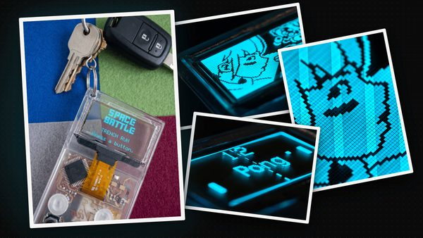
Arduview: the fully see-through retro game console
Clear tech from the 90s and 2000s is back. Shell, circuit board and screen are all see-through, not just the case. Arduview is a fully see-through retro game console with a transparent shell, circuit board, and screen. This pocket-size keychain handheld includes 300+ built-in games, a glowing cyan OLED display, USB-C loading, and compatibility with a huge community-built library for tinkering.
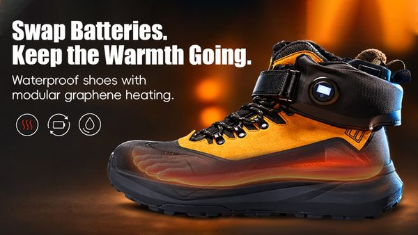
Thermodule: The World’s First Modular Heated Shoes
Swap batteries without taking them off. 1-second graphene heat plus full-system waterproofing. Your everyday tech winter shoes. Thermodule delivers modular heated shoes with graphene insoles, swappable collar batteries, and full-system waterproofing. Heat starts in 1 second, temperature adjusts with a simple press, and spare batteries keep warmth going without removing shoes or pulling out insoles

Townew Drawer: Auto Ejection & Self-Sealing Smart Trash Can
Motion-sensing Lid | One-touch Bag Sealing | Auto Trash Bag Replacement | Smart Drawer for Bag Easier Removal | Final Touch of Modern Home

MOKVINO: 6-in-1 Modular Cutting Board & Prep Station
Modular Prep Station | Hidden Knife Storage | UV Light | Built-In Sharpener Storage | Dual-Surface Cutting | Ultrasonic Cleaning MOKVINO is a 6-in-1 modular cutting board and prep station with dual surfaces, hidden magnetic knife storage, UV sterilization, built-in sharpener storage, expandable accessory space, and an ultrasonic cleaning basin. Designed to streamline prep, reduce mess, and keep es
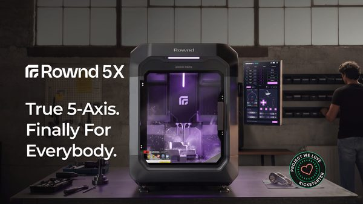
Rownd 5X | True 5-Axis. Finally For Everybody
Simultaneous 5-axis CNC machining, a 2.2 kW spindle and 10-tool ISO20 ATC. Big possibilities. Desktop size. Rownd 5X delivers true simultaneous 5-axis CNC machining in a desktop footprint, powered by a 2.2 kW spindle and 10-tool ISO20 automatic tool changer. Built for creators who need complex parts, faster workflows, and production-grade capability without sacrificing precious workshop space.
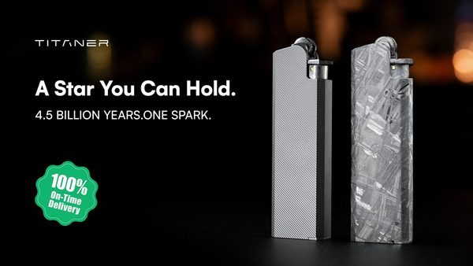
Titaner Monolith: Titanium & Meteorite Lighter
Muonionalusta meteorite meets titanium, with a refined refillable core, copper heat sink, magnetic slider, and replaceable insert. Disposable lighters crack, run dry, or feel forgettable after a few uses. This refillable design solves that with durable titanium, a replaceable insert, reliable torch ignition, and a magnetic slider that feels precise. Meteorite shell detailing adds rarity to a tool
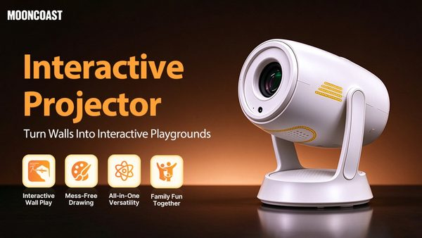
MOONCOAST: Turn Any Wall into an Interactive Playground
A touch-enabled home projector for interactive learning, creative drawing, family games, and entertainment. MOONCOAST is a touch-enabled home projector that transforms any wall into an interactive space for learning, drawing, music, games, and family entertainment. With a 40-120 inch display and easy keystone correction, it fits bedrooms, playrooms, and living rooms while delivering more value fro